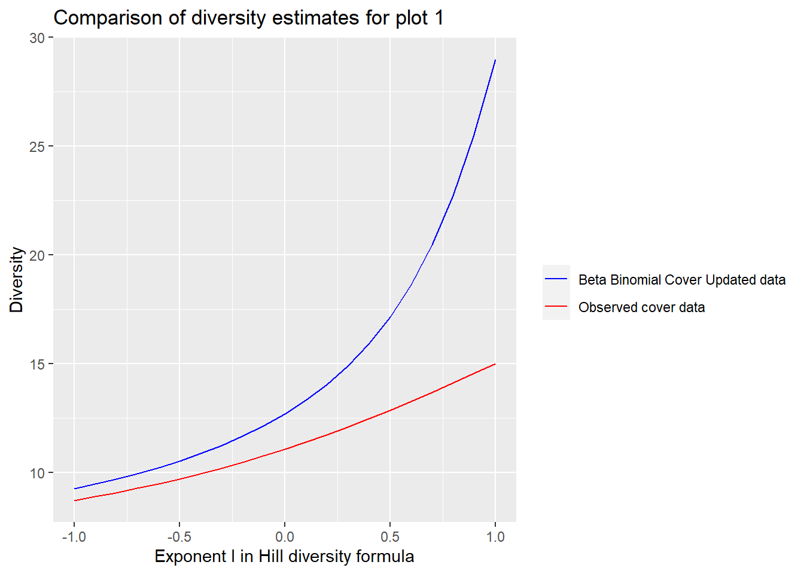
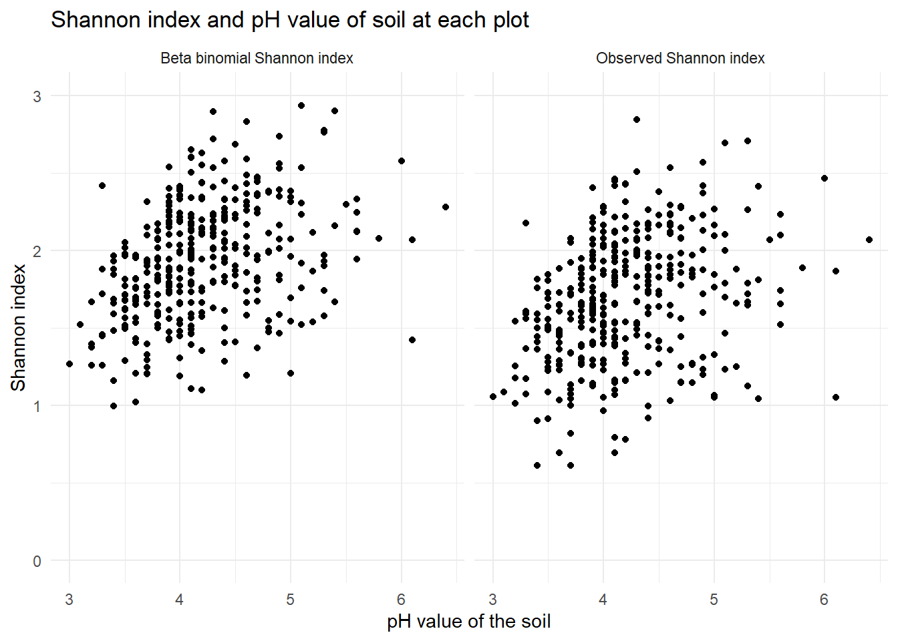

A bayesian method for better plant diverity estimates
Last updated: 2021-04-26
Checks: 6 1
Knit directory: DataProject - model validation/
This reproducible R Markdown analysis was created with workflowr (version 1.6.2). The Checks tab describes the reproducibility checks that were applied when the results were created. The Past versions tab lists the development history.
The R Markdown file has unstaged changes. To know which version of the R Markdown file created these results, you’ll want to first commit it to the Git repo. If you’re still working on the analysis, you can ignore this warning. When you’re finished, you can run wflow_publish to commit the R Markdown file and build the HTML.
Great job! The global environment was empty. Objects defined in the global environment can affect the analysis in your R Markdown file in unknown ways. For reproduciblity it’s best to always run the code in an empty environment.
The command set.seed(20210322) was run prior to running the code in the R Markdown file. Setting a seed ensures that any results that rely on randomness, e.g. subsampling or permutations, are reproducible.
Great job! Recording the operating system, R version, and package versions is critical for reproducibility.
Nice! There were no cached chunks for this analysis, so you can be confident that you successfully produced the results during this run.
Great job! Using relative paths to the files within your workflowr project makes it easier to run your code on other machines.
Great! You are using Git for version control. Tracking code development and connecting the code version to the results is critical for reproducibility.
The results in this page were generated with repository version 89a6cee. See the Past versions tab to see a history of the changes made to the R Markdown and HTML files.
Note that you need to be careful to ensure that all relevant files for the analysis have been committed to Git prior to generating the results (you can use wflow_publish or wflow_git_commit). workflowr only checks the R Markdown file, but you know if there are other scripts or data files that it depends on. Below is the status of the Git repository when the results were generated:
Ignored files:
Ignored: .Rhistory
Ignored: .Rproj.user/
Ignored: analysis/.Rhistory
Ignored: analysis/figure/
Untracked files:
Untracked: analysis/Map.Rmd
Untracked: data/frekvens_data_6210_year2009(1).csv
Untracked: data/hill_plot_data.csv
Untracked: figure/Animation.Rmd/unnamed-chunk-11-1.gif
Untracked: figure/index.Rmd/
Untracked: figure/plot4.PNG
Untracked: figure/plot41.PNG
Unstaged changes:
Modified: analysis/Animation.Rmd
Modified: analysis/index.Rmd
Modified: code/function.R
Note that any generated files, e.g. HTML, png, CSS, etc., are not included in this status report because it is ok for generated content to have uncommitted changes.
These are the previous versions of the repository in which changes were made to the R Markdown (analysis/index.Rmd) and HTML (docs/index.html) files. If you’ve configured a remote Git repository (see ?wflow_git_remote), click on the hyperlinks in the table below to view the files as they were in that past version.
| File | Version | Author | Date | Message |
|---|---|---|---|---|
| Rmd | bb6ab85 | MHPHP | 2021-04-21 | Commited index again and changes in model_validering of the assumptions |
| html | bb6ab85 | MHPHP | 2021-04-21 | Commited index again and changes in model_validering of the assumptions |
| Rmd | 33269f8 | MHPHP | 2021-04-21 | Index changes, and functions changes. |
| html | 33269f8 | MHPHP | 2021-04-21 | Index changes, and functions changes. |
| html | 524999a | GitHub | 2021-04-18 | Add files via upload |
| Rmd | bc87b52 | GitHub | 2021-04-18 | Add files via upload |
| Rmd | 6c0e88a | GitHub | 2021-04-15 | Add files via upload |
| html | 1bfbb02 | GitHub | 2021-04-14 | Add files via upload |
| html | f173714 | GitHub | 2021-04-14 | Add files via upload |
| Rmd | 13425ec | GitHub | 2021-04-14 | Merge branch ‘master’ into Nikolaj |
| html | 13425ec | GitHub | 2021-04-14 | Merge branch ‘master’ into Nikolaj |
| Rmd | 7a3c9bd | nbendsen | 2021-04-14 | add stuff |
| html | 7a3c9bd | nbendsen | 2021-04-14 | add stuff |
| Rmd | 29e6e6f | MHPHP | 2021-04-14 | Added docs for functions |
| html | 29e6e6f | MHPHP | 2021-04-14 | Added docs for functions |
| html | 2e33a66 | MHPHP | 2021-04-07 | Build site. |
| Rmd | 059ac58 | MHPHP | 2021-04-07 | wflow_publish(all = TRUE) |
| html | 51449f1 | MHPHP | 2021-04-07 | Build site. |
| Rmd | 32f0ec7 | MHPHP | 2021-04-07 | wflow_publish(all = TRUE) |
| html | e5eedea | nbendsen | 2021-03-31 | Build site. |
| html | c434a8c | nbendsen | 2021-03-31 | Build site. |
| Rmd | 568a3c5 | nbendsen | 2021-03-31 | wflow_publish(c(“analysis/index.rmd”)) |
| Rmd | 713e7fb | GitHub | 2021-03-31 | Merge branch ‘master’ into master |
| html | 713e7fb | GitHub | 2021-03-31 | Merge branch ‘master’ into master |
| html | 1caf04d | MHPHP | 2021-03-30 | Build site. |
| Rmd | a2dddd6 | MHPHP | 2021-03-30 | wflow_publish(all = TRUE) |
| html | a2dddd6 | MHPHP | 2021-03-30 | wflow_publish(all = TRUE) |
| html | d945760 | nbendsen | 2021-03-30 | Build site. |
| Rmd | b8765a5 | nbendsen | 2021-03-30 | wflow_publish(c(“analysis/index.rmd”, “analysis/function_shannon.rmd”)) |
| html | 96ffa9e | nbendsen | 2021-03-25 | Build site. |
| Rmd | a90c239 | nbendsen | 2021-03-25 | wflow_publish(c(“analysis/index.rmd”)) |
| html | f3968f6 | MHPHP | 2021-03-25 | Build site. |
| Rmd | 2d04d26 | MHPHP | 2021-03-25 | wflow_publish(“analysis/index.Rmd”) |
| html | 475c26b | nbendsen | 2021-03-24 | Build site. |
| Rmd | 47a03be | nbendsen | 2021-03-24 | wflow_publish(c(“analysis/index.rmd”)) |
| html | 9ed2be6 | nbendsen | 2021-03-24 | Build site. |
| Rmd | d7b7e47 | nbendsen | 2021-03-24 | wflow_publish(c(“analysis/index.rmd”)) |
| html | a719931 | nbendsen | 2021-03-24 | Build site. |
| Rmd | 8ec6fcf | nbendsen | 2021-03-24 | wflow_publish(c(“analysis/index.rmd”)) |
| html | 7743879 | nbendsen | 2021-03-24 | Build site. |
| Rmd | 7762b80 | nbendsen | 2021-03-24 | wflow_publish(c(“analysis/index.rmd”)) |
| html | 35cf564 | nbendsen | 2021-03-24 | Build site. |
| Rmd | c1edf4a | nbendsen | 2021-03-24 | wflow_publish(c(“analysis/index.rmd”)) |
| html | 97bf5d5 | nbendsen | 2021-03-24 | Build site. |
| Rmd | 103a237 | nbendsen | 2021-03-24 | wflow_publish(c(“analysis/index.rmd”)) |
| html | 3967bb2 | nbendsen | 2021-03-24 | Build site. |
| Rmd | 1bc1c06 | nbendsen | 2021-03-24 | wflow_publish(c(“analysis/index.rmd”)) |
| html | 7fcbf35 | nbendsen | 2021-03-24 | Build site. |
| Rmd | e6d7258 | nbendsen | 2021-03-24 | wflow_publish(all = TRUE) |
| Rmd | fed4b63 | bendsen | 2021-03-22 | Start workflowr project. |
Introduction
Many methods for estimating the abundance of species within an area has been proposed in the litterature. In this vignette we will propose a new method with this goal where we combine cover data and prensence/absence data. We will be working with a subset of the NOVANA dataset as an example to show how this new method can be applied.
The NOVANA dataset consists of several parts. We will be using data of cover and presence/absence of species within each plot and also further data about each plot.
Cover data of species in a given area can be done in many ways. In the NOVANA dataset the pin-point method is used to estimate the abundance of species in a plot. In the center of each plot \(n\) pins is placed and the number of pins each specie is hit by is recorded. In the NOVANA dataset \(n\) = 16 pins are used. As an example the below dataframe shows what cover data could look like
kable(Cover, "html") %>% kable_styling()| Specie 1 | Specie 2 | Specie 3 | Specie 4 | Specie 5 | Specie 6 | Specie 7 | Specie 8 | Specie 9 | Specie 10 | |
|---|---|---|---|---|---|---|---|---|---|---|
| Plot 1 | 2 | 0 | 0 | 1 | 0 | 3 | 0 | 0 | 2 | 0 |
| Plot 2 | 0 | 0 | 0 | 0 | 0 | 0 | 0 | 0 | 0 | 0 |
| Plot 3 | 5 | 0 | 1 | 10 | 0 | 11 | 7 | 16 | 0 | 0 |
| Plot 4 | 0 | 2 | 1 | 9 | 3 | 0 | 4 | 9 | 1 | 1 |
| Plot 5 | 1 | 0 | 16 | 0 | 0 | 14 | 0 | 0 | 11 | 13 |
| Plot 6 | 0 | 1 | 0 | 0 | 0 | 1 | 1 | 0 | 0 | 0 |
| Plot 7 | 16 | 10 | 2 | 7 | 0 | 13 | 0 | 9 | 5 | 0 |
The other part we will use to estimate the abundance of species in each plot is the presence/absence data. Within each plot it is recorded whether a specie is to be found somewhere in the plot. This is indicated by a binary variable with found = 1. Below is an example of what this data could look like
kable(PersenceAbsence, "html") %>% kable_styling()| Specie 1 | Specie 2 | Specie 3 | Specie 4 | Specie 5 | Specie 6 | Specie 7 | Specie 8 | Specie 9 | Specie 10 | |
|---|---|---|---|---|---|---|---|---|---|---|
| Plot 1 | 1 | 1 | 0 | 1 | 0 | 1 | 1 | 0 | 1 | 0 |
| Plot 2 | 0 | 1 | 0 | 0 | 0 | 0 | 0 | 0 | 0 | 0 |
| Plot 3 | 1 | 0 | 1 | 1 | 0 | 1 | 1 | 1 | 0 | 0 |
| Plot 4 | 0 | 1 | 1 | 1 | 1 | 0 | 1 | 1 | 1 | 1 |
| Plot 5 | 1 | 0 | 1 | 0 | 0 | 1 | 0 | 0 | 1 | 1 |
| Plot 6 | 0 | 1 | 0 | 0 | 0 | 1 | 1 | 0 | 0 | 0 |
| Plot 7 | 1 | 1 | 1 | 1 | 1 | 1 | 0 | 1 | 1 | 1 |
Here we also note that a specie can have a 1 in the presence/absence data but a 0 in the cover data as it is also the case in the above examples. We will make use of this property of the data in our method.
NOVANA data
The NOVANA data sets consist of information for different “sites” across Denmark. A site is a nature area, where information of that site is collected as samples on a plot level. A plot is a circle with radius 5 meters, where information of which species exists inside the circle is collected. Various other metrics, such as pH level of the earth might also be collected. This is where the presence/ absence is from. In the center of the 5 meter circle, is 16 pins placed in a square with side length 0.5 meters, where the percentage of pins a specie is hit by determines the cover for that specie. A habitat type is also given to the plot, either determined in the field or by the plants observed in the 5 meter circle.
As an example will we here focus on a single habitat 6230 (“Surt overdrev”), where we first plotted the sites in Denmark contain a plot of this type, to give an idea of how the site are distributed across Denmark.
We have the zoomed in on a single site, where each of the plots can be seen as a red dot.
For a single plot have we made a drawing that illustrates what a plot looks like.
Linking to ImageMagick 6.9.12.3
Enabled features: cairo, freetype, fftw, ghostscript, heic, lcms, pango, raw, rsvg, webp
Disabled features: fontconfig, x11# A tibble: 1 x 7
format width height colorspace matte filesize density
<chr> <int> <int> <chr> <lgl> <int> <chr>
1 PNG 1135 662 sRGB TRUE 182948 47x47 
Each colour represent a single specie. In this example will the brown specie not be observed in either presence/absence data or cover data since it is outside the 5 meter circle, and will therefor have an 0 in presence/absence data and 0 in cover data. The purple species, is present inside the circle so it will be present in the plot and have a 1 in the presence/absence data. But since it is not inside the 0.5 m square, will we not record any cover data for it, so its value in the cover data will be 0. The yellow specie also has a 1 recorded in the presence/absence data, and since a single pin is hitting it will the cover data for it be 1. This means that the recorded cover for this specie is 1/16 of the total area. The green specie is similar, but is hit by 9 pins so it has 9 in cover and its recorded cover of the area is 9/16. It is possible for multiple specie to overlap and for a pin to hit more than one specie, which we have indicated by the red overlapping with the green and yellow. Is this example is the red specie hit by all 16 pins, which means that it will have 16 in the cover data.
Theoretical discussion
The plant diversity is often calculated by only using the presence/absence data. However, in this method we loose a lot of valuable information from the cover data. In the following we propose a method that obtain an estimate of a specie’s abundance in each plot that takes into account the spatial aggregation of the species which we can estimate using the cover data. This should also lead to better diversity estimates. We will do this by applying a bayesian framework and use a beta-binomial model. From the general setup in bayesian statistics we get that \[ P(\theta|Y=y) \propto P(Y=y|\theta)\cdot \pi(\theta) \] where \(P(Y=y|\theta)\) is the likelihood function and \(\pi(\theta)\) is the prior distribution. We are interested in the posterior distribution \(P(\theta|Y=y)\) which we can use to estimate the abundance of a specie in a plot.In the cover data each specie is hit by \(y\) pins out of \(n\) possible in each plot. A natural distribution to model this is the binomial distribution \[ P(Y = y| \theta) = {n \choose y}\theta^y(1-\theta)^{n-y} \]
We use the binomial model as the likelihood function in the bayesian framework that we apply.
We can create a prior distribution \(\pi(\theta)\) for each specie by using both cover and presence/absence data. This is really the key idea in this method because this makes it possible to get a prior belief of a species spatial aggregation in a plot when we know that the specie is present.
The beta model is a conjugacy prior for the binomial model and, thus, is ideal to use. The beta-distribution is given by \[ \pi(\theta) = \text{beta}(\alpha, \beta) = \frac{\Gamma (\alpha+\beta)}{\Gamma (\alpha) \Gamma(\beta)}\theta^{\alpha -1}(1-\theta)^{\beta-1} \] When working with the bayesian framework, one has to decide on the paramters \(\alpha\) and \(\beta\). However, this can be difficult and instead we apply the empirical bayes method: For each specie we fit a beta-prior using all the cover data where the corresponding presence/absence data is 1.
From the likelihood function and the prior distribution we get that the posterior will be an updated beta distribution for each specie in each plot \[ P(\theta | Y = y) \sim Beta(\alpha + y, \beta + n-y) \] When the posterior distribution is found for a specie in a given plot, we use the mean posterior as a measure of the abundance for the specie in the plot.
The mean posterior for a beta-distribution is given by: \[ E\Big(P(\theta|Y =y)\Big) = \frac{\alpha + y}{\alpha + y+\beta + n-y} \] From the above theoretical discussion we get a new dataset with updated abundances for each specie in each plot. The next step for users of this method will be, as an xample, to apply some diversity measures for the plots in the new updated dataset. Some of commonly used diversity measures are described in link and will be used in the examples below.
Implementation
The above theoretical discussions of the beta-binomial model are implemented in the function “bayesian_method”.
Usage:
bayesian_method(cover_data, presence_absence_data, n = 16 , remove_column = 0)
Arguments:
- Cover_data: Data frame with plots as rows and species as columns. Each cell in the data frame contains cover data for a given specie in a given plot.
- presence_absence_data: Data frame with plots as rows and species as columns. Each cell in the data frame contains a 1 if the specie is present in the plot or a 0 if the specie is absent in the plot.
- n: An integer. A number each cell in the cover data gets divided by if the cover data is not in the interval \([0,1]\). In the NOVANA dataset n = 16 secures this property. If the cover data is already on the interval \([0,1]\), one can just let n = 1.
- remove_column: An integer. In case the first columns in the cover_data and presence_absence_data contain data not about the species but rather information on the plots, these columns have to be removed. The numbers of columns to be removed must be the same in the cover_data and presence/absence_data. The removed columns will be included again in the output. In the NOVANA dataset the first columns are “site”, “plot”, year" so remove_column = 3 when this datasat is applied.
Output
- The function returns a dataframe, similar to the cover data, but now containing new abundance data calculated using the method descripted above.
For further specifications of the function click link
First example
In the this first example we only work with data including the terhabtype = 6230 from the NOVANA dataset and we only look at year 2014. Click on this link for further details on how this subset was created.
cover <- read.csv("data/cover_data_6230_year2014.csv")
freq <- read.csv("data/frekvens_data_6230_year2014.csv")
abiotiske <- read.csv("data/abiotiske_data_6230_year2014.csv")
We apply the method function to the cover and freq datasets and obtain a “result” dataset with new abundace values for each species in each plot.
result <- bayesian_method(cover, freq, n = 16, 3)Species level
To get a sense of what the method has done, we plot the prior distribution of the species “Agrostis capillaris”
curve(dbeta(x,a,b), xlab = "relative cover", main = "Prior distribution of Agrostis capillaris") It is seen that there it high probability of being either around 0 or around 1. This is not only for this species but a common prior distribution for all the species. This is because a lot of species are grouped in a way, such that if they are present, they will cover a lot of the area, or else they are not present at all.
It is seen that there it high probability of being either around 0 or around 1. This is not only for this species but a common prior distribution for all the species. This is because a lot of species are grouped in a way, such that if they are present, they will cover a lot of the area, or else they are not present at all.
Next we want to give a sense of how the the distributions of the number of pins the species Agrostis capillaris is hit by throughout all plots in the datasets change. First, we see the distribution of pins that the species is hit by in the observed cover data
hist(cover[,"X116"], probability = TRUE, xlab = "Number of pins", main = "Histogram of the species Agrostis capillaris in the observed cover dataset") It is seen that the species is not observed in a lot of plots, therefore the bar for 0 is quite high compared to the other bars. It is also seen that the other bars are somewhat similar. However, the bars get a bit higher towards the higher number of pins. This is in line with the grouping of a species described above.
It is seen that the species is not observed in a lot of plots, therefore the bar for 0 is quite high compared to the other bars. It is also seen that the other bars are somewhat similar. However, the bars get a bit higher towards the higher number of pins. This is in line with the grouping of a species described above.
Below we plot the distributions of pins the species is hit by in the new “result” dataset
hist(result[,"X116"], probability = TRUE, xlab = "Number of pins", main = "Histogram of the species Agrostis capillaris in the new dataset") Here it is seen that bars from 1-16 are in general a bit higher than in the observed cover data.
Here it is seen that bars from 1-16 are in general a bit higher than in the observed cover data.
Hill Diversity comparison
We will in this section use the Hill diversity that is described in Diversity, to compare the Beta Binomial Cover Updated data with just the cover data. This will highlight how using our Beta Binomial Cover Update method will change the result depending on how much weight rarity is given. Hill diversity is given as
\[ \text{Hill diversity = }\left( \sum_{i=1}^{S} p_i (r_i)^{l}\right)^{1/l} \]
where the \(l\) exponent determines how much weight rare specie is given, where the higher the \(l\) value the more weight is rare species given. For \(l = -1\) we have the Hill Simpson diversity, for \(l = 0\) we have the Hill Shannon diversity and for \(l = 1\) we have the species richness.
In the below, we look at some plots in the dataset. We see how the diversity of the plots changes as a function of the exponent \(l\). We do this for the plot in both the observed cover dataset and the Beta Binomial Cover Updated data. This can help to give a feeling for which aspects of the the plot our method has changed.
For plot 1
different_diversities(cover, result, plot = 1, remove_column = 3)
For plot 100
different_diversities(cover, result, plot = 100, remove_column = 3)
When we updated the data using th beta binomial method, will all specie that is observed in the presence/absence data of the plot, get a small value in the Beta Binomial Cover Updated data, even though they are not present in the cover data. Because a high \(l\) value emphasizes rare specie more, will we see how the diversity estimates drift apart when \(l\) increases in both plots. At the specie richness \(l = 1\), are we comparing the number of specie found in the cover data i.e the small square, vs the number of specie found in the presence/absence data i.e the 5 meter circle.
The same can be found if we instead of looking at single plots, look at the average for all plots of the habitat type 6230 (“Surt overdrev”) together with the standar deviation.

It is clear from the plot above, that using the Beta Binomial Cover Updated data will change the result more the higher \(l\) value is used.
…
Different diversity estimates compared
We can also compare how different diversity estimates differ throughout all the plots in the observed cover data and the new dataset respectively. All the used diversity estimates are defined at link. In the below we have calculated the shannon index each plot in both the observed cover dataset and in the “result” dataset
observed_shannon <- shannon(cover, 3)updated_shannon <- shannon(result, 3)We plot the shannon indexes against each other  It can be seen in this example, that the shannon index for the updated dataset gives a slightly higher value for most plots. Noticeably are the biggest difference among plots with a shannon value of 0 using the simpler method, that now have a value closer to 1 with our way of calculating the shannon index.
It can be seen in this example, that the shannon index for the updated dataset gives a slightly higher value for most plots. Noticeably are the biggest difference among plots with a shannon value of 0 using the simpler method, that now have a value closer to 1 with our way of calculating the shannon index.
Another often used diversity estimate is the simpson’s index. We create a similar plot as above
observed_simpson <- simpson(cover, 3)updated_simpson <- simpson(result, 3)
Small values of simpson index indicate a high diveristy for a plot. It is worth to notice that for plots with high diversity our method does not seem to change the data as much as it did in the plot of the shannon indexes.
…
Species diversity and pH value
An interesting aspect of the data we work with in this example is how the diversity of a plot is correlated with the pH value of the soil at the plot.
First we see the shannon index from the updated dataset relates to the pH values
ggplot(mapping = aes(x = as.numeric(abiotiske$pHjord), y = updated_shannon)) +
geom_point()+
xlim(3,6.5)+
theme_classic()+
labs(x = "pH value of the soil", y = "Updated shannon index")+
ggtitle("Shannon index and pH value of soil at each plot")
Next we show how different diversity measures relates to the pH value. The function plot_index_gradient is used to visualize how different ways of calculating diversities compare against each other when mapped against the pH values.
plot_diversity(data_for_plot ,c("Hill Shannon","Species richness", "Hill Simpson"), "pH", description = "The PH value of the soil for each plot")
plot_diversity(data_for_plot ,c("Hill Shannon","Species richness", "Hill Simpson"), "Ndep", description = "The Ndep value of the soil for each plot")
Comments …
Second example
In the second example we look at terhabtype = 6210 in year 2009 from the NOVANA dataset.
cover_6210 <- read.csv("data/cover_data_6210_year2009.csv")
freq_6210 <- read.csv("data/frekvens_data_6210_year2009.csv")
abiotiske_6210 <- read.csv("data/abiotiske_data_6210_year2009.csv")With this data, we are especially interested in how the diversity change when plotted against different values of nitrogen in the soil. It is known that increased nitrogen supply can cause changes to the species composition.
We apply our function to the data.
new_data <- bayesian_method(cover_6210, freq_6210, n = 16, remove_column = 3)We map the shannon index of the new dataset against the nitrogen value of the soil 
ggplot(data_for_plot, mapping = aes(x = N, y = `Hill Simpson`))+
geom_point() +
ylab("Hill Simpson") +
xlab("Nitrogen in soil") +
ggtitle("Hill Simpson compared to nitrogen value in the soil")
ggplot(data_for_plot, mapping = aes(x = N, y = `Species richness`))+
geom_point() +
ylab("Species Richness") +
xlab("Nitrogen in soil") +
ggtitle("Species richness compared to nitrogen value in the soil")
sessionInfo()R version 4.0.3 (2020-10-10)
Platform: x86_64-w64-mingw32/x64 (64-bit)
Running under: Windows 10 x64 (build 19042)
Matrix products: default
locale:
[1] LC_COLLATE=English_United Kingdom.1252
[2] LC_CTYPE=English_United Kingdom.1252
[3] LC_MONETARY=English_United Kingdom.1252
[4] LC_NUMERIC=C
[5] LC_TIME=English_United Kingdom.1252
attached base packages:
[1] stats graphics grDevices utils datasets methods base
other attached packages:
[1] fitdistrplus_1.1-3 survival_3.2-7 MASS_7.3-53
[4] magick_2.7.1 OpenStreetMap_0.3.4 sp_1.4-4
[7] kableExtra_1.3.4 forcats_0.5.0 stringr_1.4.0
[10] dplyr_1.0.2 purrr_0.3.4 readr_1.4.0
[13] tidyr_1.1.2 tibble_3.0.4 ggplot2_3.3.2
[16] tidyverse_1.3.0
loaded via a namespace (and not attached):
[1] httr_1.4.2 maps_3.3.0 splines_4.0.3 jsonlite_1.7.1
[5] viridisLite_0.3.0 modelr_0.1.8 assertthat_0.2.1 highr_0.8
[9] blob_1.2.1 cellranger_1.1.0 yaml_2.2.1 pillar_1.4.6
[13] backports_1.1.10 lattice_0.20-41 glue_1.4.2 digest_0.6.25
[17] promises_1.1.1 rvest_0.3.6 colorspace_1.4-1 Matrix_1.2-18
[21] htmltools_0.5.0 httpuv_1.5.5 pkgconfig_2.0.3 broom_0.7.2
[25] raster_3.4-5 haven_2.3.1 scales_1.1.1 webshot_0.5.2
[29] svglite_2.0.0 whisker_0.4 later_1.1.0.1 git2r_0.28.0
[33] mgcv_1.8-33 generics_0.0.2 farver_2.0.3 ellipsis_0.3.1
[37] withr_2.3.0 cli_2.1.0 magrittr_1.5 crayon_1.3.4
[41] readxl_1.3.1 evaluate_0.14 fs_1.5.0 fansi_0.4.1
[45] nlme_3.1-149 xml2_1.3.2 tools_4.0.3 hms_0.5.3
[49] lifecycle_0.2.0 munsell_0.5.0 reprex_0.3.0 compiler_4.0.3
[53] systemfonts_1.0.1 rlang_0.4.8 grid_4.0.3 rstudioapi_0.11
[57] labeling_0.4.2 rmarkdown_2.4 gtable_0.3.0 codetools_0.2-16
[61] DBI_1.1.0 R6_2.4.1 lubridate_1.7.9 knitr_1.30
[65] rgdal_1.5-23 utf8_1.1.4 workflowr_1.6.2 rprojroot_1.3-2
[69] rJava_0.9-13 stringi_1.5.3 Rcpp_1.0.5 vctrs_0.3.4
[73] mapproj_1.2.7 dbplyr_1.4.4 tidyselect_1.1.0 xfun_0.18